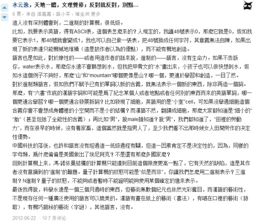
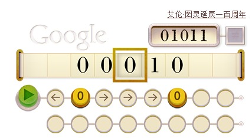
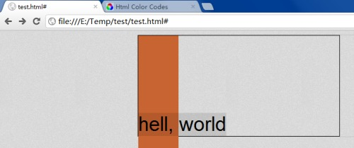
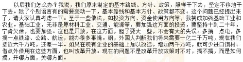
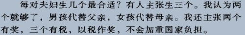
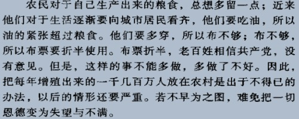
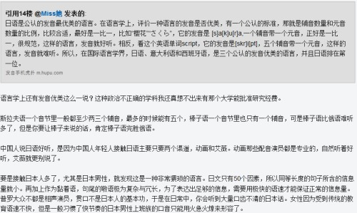
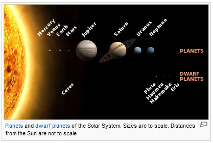
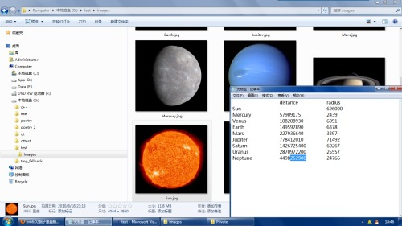
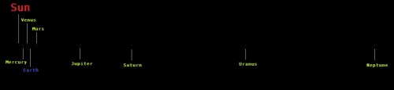

虽然好像挺泛滥了吧，但第一次听到就是觉得好听
哎呀，javascript的arguments太帅~~~（特别是跟它那异质(heterogeneous)数组结合起来）
日他妈的，一篇影评能剧透n个无关电影，带不带这么防不胜防的
SN 1054（Supernova? 1054），M1（Crab Nebula），PSR B0531+21（Crab Pulsar）
一颗恒星的前世今生~~~（其实不算前世了，从回光返照算起的~~）
18禁，被误导了别说我的错
（方舟子碰上这样的家伙会不会有耐心反驳？）
补：另一篇 （看了这个自己也有点儿疑惑）(更新：62楼才终于明白了，而且还是维基~~)
联系之前跟狼王讨论的引力问题，表示自己还是应该更耐心点——并且承认自己虽然知道点粗浅的概念，但想细致、严谨地证明这些概念（同时说服他人）还是能力不足的（于是其实这些概念只是当信念接受的，这可并非科学的精神），，所以，任何时候都不要着急上火，除了摒除道德优越感之外，也要摒除第一篇里说的那种“智力优越感”（知识，其实是，，自己也不咋D）
人择原理+射手与农场主假说完爆“精致宇宙->神创”的推论~~
虽然不排除神创，但我们目前完全不需这一假设（奥卡姆剃刀）

笑趴了，真亮
我靠，不是吧。。。
知乎这条问答中有一楼非常赞呃：


图灵机~~带感，，应该是HTML5写的吧？
（为毛计科专业的祖师爷是gay...~~）
电子乐听得浑身发麻~~~zing zing zing...

无心插柳，有点儿半透明云母片的效果哈？加上CSS3的transition能做个不错的<nav>
当时写那个台球时就能窥见些许“物理引擎”的影子，那是个很简单的“引擎”，物体是简单的几何图形，有速度，有碰撞（完全弹性碰撞），有摩擦力（恒定摩擦系数），一共20多个球用傻逼级的算法最终做到80FPS以上没啥难度
这时看的书里提到Box2D（一个JavaScript的二维物理引擎），提到三个词：density（密度）、friction（摩擦）、restitution（恢复(系数)）
眼前瞬间就浮现恐怖数量级的计算——据说核实验模拟用巨型机都得跑上几天几月？
是这么D：从技术角度考虑，模拟分各种真实度，想想一个球，自由落体撞在地上，碰撞的一瞬间我们可以让它速度反向，这是一层，还可以扔掉一些速度做成非完全弹性碰撞，都还好
现在，根据恢复系数做个形变——忽然间这个球不再是简单的几何体了，变成一个恶魔般的摩尔级粒子的集合体，每个粒子间都有作用力
呵呵，也没那么恐怖了，球体的形变可以做成椭球体，，但不规则物体呢？假如你要做一个高真实度的现实世界模拟，就比如一个超真实度的CS游戏，子弹打到人身上会有摩擦、减速、组织破裂，跑步会产生脚部肌肉、骨骼的形变，空气流动使衣物飘扬。。。。
很早听过一个判断你是不是存在于matrix中的简单办法：找两块对面的镜子，你在其间移动那么一下子，如果是matrix，系统果断当机，因为它处理不了那么大的运算量（两面镜子中的物体映像是无穷的）
其实有点儿扯，镜子中的映像一层层越来越小，matrix可以做降低精度的处理（就像3D游戏中距离远就降低模型复杂度的技术）——不过这个扯倒是牵扯到了一个本质问题：
matrix的处理速度跟我们的体验有关系吗？
游戏的动态在计算机中的流程是这样的：1、计算下一帧画面 2、渲染画面 3、返回1继续
步骤1算15ms，步骤2算5ms，算下来每秒帧数（FPS）就是50，还算流畅了
如果机子撇，FPS降到20，我们就觉得卡了，，这里的关键在于，之所以我们能觉得卡，是因为我们在游戏之外，我们的时间流逝与游戏无关
我们的时间流逝与什么有关呢？
做个思维实验：一片虚空，其间悬浮一个球体，不动，一动不动，，在这片空间里，什么是时间？
实验二：一片虚空，其间悬浮一个弹簧，长了短了，长了短了，周而复始，我们可以把弹簧的周期定为一个时间单位，那么在这片空间里时间就有了
时间由变化定义
对于游戏中的人物，它们的时间与我们世界里的一年四季无关、与我们世界里的太阳东升西落无关、与我们世界里的原子不歇震动无关，它们的时间由一帧帧游戏计算结果定义，两帧之间是一片空白，谈论两帧之间的时间是没有意义的
于是，5000FPS跟5FPS没有区别
于是，我们这些matrix中的家伙，一眨眼或是一沧海桑田，与我们造物主世界里过了十亿年还是一纳秒无关
尽不用去管规模问题、速度问题，计算出一个世界，那就是它们的果壳和果壳中的宇宙
box2d，fps，模拟，matrix
后记：仍然写得很不满意，因为这篇不是给自己log而是要做传达用的，写得丑，只求别人能看明白就谢谢了吧
PS：上面几个词是写之前放那当关键词用的，免得写的动作打扰了对之前思维的记忆
序
e: 所以，你们的世界是这样的
m: 恩
e: 真可怕
m: 习惯了，觉不到
http://www.phoboslab.org/ztype/
http://chrysaora.com/ （我这用的ff13，about:config里设置webgl.force-enabled）（from http://blog.skeeterhouse.com/?p=2437）
很奇异，听Arctic Monkeys时不由自主地就浮现SMX时那教室，人在后排，可见窗户和窗外的天，还有一种脑中存在的气味，，昨晚逛去OD，实在很欣赏那几个配色呢，是某种心情，对记忆的描绘
飘吧，飘吧，干燥的烟呵
囧了，你妹
“一手一个掐吧死俩，刨坑埋了！！！”
毛概的考试上，做完卷子无聊乱翻书，看到“备战备荒，立足于早打、大打、打核战争”，看到“霸权主义”。。。浮想美帝的侵略政策、资源掠夺之类，忽然就想到——恩，资源掠夺、生存斗争在人类中并非造就必然的暴力行为，那么这之中还有意识形态在，乃至有千万年来烙印在人类基因中的本能在（生存环境造就的暴力本能），，就想到如果某个物种在全然不同的生存环境中进化而来，它们会对人类的暴力倾向感到匪夷所思。。。
以上在当时的思维里只是闪念，闪完滑向了这里：
何以能从政治课本上的内容想到进化论啊、科幻啊之类呢？引子是“掠夺”这个概念，掠夺又跟“暴力”联系，满脑子“掠夺”、“暴力”之时就浮现出自然界的印象（此处相当个人化——因为换个人、大多数人，对自然的根本印象还是什么“鸟儿自由自在地飞翔”云云，“掠夺”“暴力”不会引向此处）
来抽象一层：记忆在头脑中的储存是以某种基本粒子为节点（无法按显然的层次归类，“战争”可以作为一次思维活动中的节点，也可以作为数个节点引起的一次思维总和），每时的思维活动都是数个（数万个？）节点的激活——它们形成网，这个网、这些网就是我们的意象、概念、意识。。。一个节点的活动会促使“相邻”节点的活动，“网”是不断生成演化的——也就形成思维的漂移，所谓“联想”。。。
以上约略两三分钟的想法，接着浮现了一副图景：
像是一些树状结构，，不，图，，一种相对数学的、精妙的结构，电信号在其中穿梭奔涌
没错，神经网络么，，现行的神经网络（计算机模拟）不是什么神秘的东西，恐怕科幻中所描述的相当程度模拟人脑的神经网络也不是
我想到的是复杂度，为毛集成度号称“超大规模”的电路跟人脑比起来仍然寒碜不禁呢？
你真想模拟人脑的话，光一个神经网络是不够的——这个存在需要输入，需要输出以互动，需要一整个想想那复杂度都令人望而生畏的自然界，，而且，即使用简化、折中的办法搞定输入输出，网络原初的存在本不是白纸一张，那是几千万年（甚至几十亿年，如果你把生物而非只灵长类整个算上的话）的进化堆积形成的后果，请问你要怎么做？
设计永远无法高于设计者本身，，这个近乎哲学的无根据的臆语般的观念一直是自己畏惧以上那条路的相当程度的一个因素，
但下面还有冷水：
即使成功，你创造出豚鼠与创造出天人的概率哪个大呢？
“于是需要一点根本的东西——想让她成为天人，要点根本上优越的东西，也许是光速的神经信号传导速度？也许是量变引起质变的记忆容量、处理速度？也许是比这些科幻更科幻些的东西？”——总之，反正，如果既没有这样根本的区别，你又只做仿生学思路的设计，就没有理由得到比克隆羊更好的结果，，
以上约莫流淌了十分钟，而其中的“起承转合”是现在写时才加上去的——思维本身是没有起承转合的，也没有字句的铿锵，，而且，你要理解几分钟片段的思维，你需要拥有这个个体生命中十几年几十年的全部经历（也许不至于，但目前我们只能往最大化了假设），叫做“冰山一角”或什么
两天来重温一遍大航海时代4——本不该在这时候玩游戏的，，但仿佛自己一贯是这么随性不按规矩来（这话贴金，“自制力”的东西下面说），就像前一段三天重温掉三体三部，大一某时连着几天玩完家园三部，补班时候临高考一个月偷看掉深渊两部，SMX时逃课在宿舍看《安德的游戏》《死者代言人》，在家那两年时沉迷于网游（征途）无所事事
像个禁不住诱惑的孩子是吧？就这点而言确是没自制力的——你看人家Daubdles临毕业时该做的还是主要做，，
其实还是想说关于热情，关于为什么无法拥有自制力的同时一些外人看来又却是有自制力的，，因为心底里压根儿就没认同过“自制力”这东西，按部就班的典范有SMX时的莫帅明同学，初中时的田青松同学，，尽管歧视性，还是想比喻这就像《天渊》里说的“科技水平很高的人成不了合格的奴隶”——价值观里崇尚乐趣、崇尚自由的家伙是难有自制力的，除非你也崇尚“责任”，可惜我不
而在外人看来有自制力的原因纯粹是自己幸运把兴趣和“责任”重合了，做感兴趣的东西是不需要督促的，，这种话曾经一而再的表述，现在懒得说了已经
脑子里忽然跳出一个想法：编程语言不应考虑机器相关的效率问题，这种问题应该由其他东西来管——就像HTML和CSS的关系
是看组成原理课本时想到的，但其实跟课本内容没啥关系，看到总线、数据传输，想到GPU这东西，数据传过去，是之前运算呢？还是之后运算呢？云云。然后忽然就蹦出HTML跟CSS来。。。人脑的思维机制真是很神秘很奇特，mindhacks曾云的“惦记”一直印象深刻（这里，还有从这里到这里）
第一段更新：进一步是描述性语言与实现的分离，——软件生态系统，公开大量库形式的实现函数，描述性语言写成的程序用编译器自动选择合适的函数去实现
（呃，写的很简略，，以后有时间有兴趣再试试能不能解释得更大众点）
呵呵，，果真被删了（与8^2有关的两篇），本还想着再加些内容呢
下面这个你们也删？

昨儿跟狼王提到这么句：“咱们那时候看的动画片咋不是悲情就是cult”
答曰：“说明那时候的人还长点心。。。。现在这帮孩子真心没童年”
话虽这么说，已然看到了一种我们自己的少年时期曾深恶痛绝的“长辈优越感”，，以及不上豆瓣不曾发觉的这类“珍爱生命 远离老国漫”“恐怖片”“惊悚片”“cult片”之类的名号，客观想想觉得过了，这些也带点儿自珍自恋的优越感
优越感这东西，往小了说滋生有色眼镜，致人闭不视物，往大了说，民族优越感、种族优越感，法西斯纳粹那一套除了体制也有意识形态的民众基础在
不说这个
何以老国漫能被冠之上面那些哗人的名号？
《红气球》这样配乐、氛围诡异的片子，第一次看着实冷汗一身，而回过头去想，所谓的政治隐喻还是很明显的（虽然仍不知为[wei2]何），，然后，这种片子带来的毛骨悚然感，会不会是言论管制环境下不得不以荒诞传递隐喻而形成的畸形效果呢？
《魔方大厦》的“玻璃城”，卸胳膊卸腿，被装在玻璃棺材炙烤，“罐头里的爸爸妈妈”，“一夜变老”等等。。。着实有童年梦魇的感觉，，主人公的形象也全然不符当今动漫所谓美感——老国漫里这样的形象比比皆是呃，《天书奇谭》里三个狐狸精（虽然现在看觉得还挺萌的），《太阳之子》里的黑风婆，《邋遢大王》，《怪老头》。。。。
还有就是价值观了，按豆友们的说法，这些片子里传达的信息简直就不是给小孩子看的
《雪孩子》里传达的死亡的概念——雪孩子救的是人祸，而即使没有这层祸事，春天来了也仍有天灾等着雪孩子，，NM这简直就是给幼童心灵传播绝望啊
《三个和尚》里展现人性（或叫有中国特色的民族劣根性?），这是给小孩儿看鲁迅啊
[我靠定着调来写东西太特么痛苦了，我要break]
[还是强着写完吧]
为什么你们觉着给孩子们看的就不该是这些带着残酷现实映射的动画呢？
如果现实确实是残酷的，把孩童装在一个终将要破碎、幻灭的虚假美好世界里又有什么好处呢？
“人类一步踏入太空，就一瞬成为非人”——这不是加加林、阿姆斯特朗那种踏入太空，因为他们还有家（地球），他们只是出门玩耍的孩子，，人类只是个装在地球摇篮里的孩子
美好、纯真的之类有它们自身的意义，我们只是在把人类生存作为终极目标时觉得蒙住双眼，守着这些所谓美好是不对的
优越感 保护 新人类
自闭症儿童公益广告，，不知为何，总感觉自闭症有种美丽而伤感的色彩
图中的话是“一个自闭症儿童得不到帮助的时间越长，他就越难以触及”
（信达雅恐怕只搞定了一个。。）
马寅初老先生的文笔看着很舒服
此条性质该发说说，但发去qq上显得忒么另类
pm2:24
哈，还提到了三门峡水利工程
pm2:41

记忆里的口号却是“只生一个好”这样的——想必马寅初老先生当时的呼吁并没被实行，乃至人口真的成为不得不面对的问题时，只保持不增长已经不够了，还要减少人口

“徒法不能以自行”，，制度、法律只是社会形态的很小一部分
许多人第一念头是“这孙子找打”吧？
但看回答：
不论内容，起码是理性的态度
发这篇blog时发现又有更新：

也才忽然觉得“客观的说...”和“最优美的...”本身就有点儿矛盾
欢迎见仁见智
PS：原文链接
pm6:02
脑子里盘桓过许久的那个想法：太阳系的真实比例图，，忽然想到可以很简单地实现下——查点儿资料（行星半径、轨道半径），然后编程生成个图片就中了么~~~哈，去试试，大家见证下能用多久
=======================分界线======================
step 1:
wiki "solar system"

这张很炫的图让自己又忍不住要爬页面了。。。原谅我
（NMBD，看看人家的严谨：“太阳系的行星和矮行星。大小为真实比例。距太阳的距离非真实比例。”）
“土星和木星主要成分为氢和氦”。。。怎么有点儿冷汗~~~曾幻想的木星发生核聚变神马的，哈
pm6:19 中了先把东西做了，wiki完了再爬
pm6:38
。。。发现不现实了，水星半径2439km，海王星轨道半径4498252900km——也就是说，如果在这张图上用一个像素显示水星的话，这张图需要180多万像素的边长（边长~~哥们，如果一个正方形的图片那么就是3亿两千多万像素的图片）

已经彻底湿了。。。做一张4000像素边长的图的话，NM啊，太阳都只有不到一像素（0.6）。。。
这还搞毛。。真做出来就是十几兆的一张全黑的图片
pm7:49

恩，大约就是这样的了
pm8:27
发觉上图容易造成错觉：请注意，每条细线指向处有一像素的颜色，表示该处的行星，，但其实上，原图为1024的宽度，按比例应为漆黑一片，最大的太阳只有0.1像素，木星、土星、天王星、海王星只有0.01像素，水星、金星、地球、火星只有0.001像素
再度下了evernote试用，再度一看到那纷繁的界面就又毫无兴趣了
vim那样新用户上手一头雾水的体验绝不该是一个好软件该有的，，Ruby、CodeAcademy等尝试过的简单教学风格的引导是很好的尝试，但我们应该做得更好
还是在幻想能颠覆信息时代目前格局的是脑输入输出装置的出现，很多设想只有那时候才能实现——并实现无穷新奇，无穷迷人的可能性（当然，也有恐怖的可能性）
http://a711217.pixnet.net/blog/post/34657999-%E8%9C%9C%E6%9C%88%E7%AC%AC%E4%B8%80%E7%AB%99-%E5%B8%9B%E7%90%89iii
想起来《八十年代荷尔蒙》里采访的一姑娘，巴黎，塞纳河。。云云
此篇算水，只是想到以后可能回想起就不想把这地址丢了，又没合适地方保存
文奇的《真名实姓》1981年出版，大刘的《中国2185》是1989年写的，，这么看来大刘还是有可能性从文奇的创作中吸取了创意，恩。。。只是个考据，没别的意味
pm2:37
“给岁月以文明，而不是给文明以岁月”
此话很好听，也很哲学，但不知道它是不是具有法则那样硬而厚重的力量
pm2:49
关于“永生”和“永死”，文奇《深渊上的火》中那些天人的60年寿命一直以来是记忆中科幻给的一个强烈的震撼，让人回想就不禁感到“观念”这东西可以何等局限，我们井底之蛙的状态可以何等可笑——恩。。就是这些点点滴滴，以及其他许多，告诫自己，或说在价值观中形成一种永远保持开放观念的心态，，是不是好东西无人说，用大刘此文里的一句话来讲，现实里，“操这份闲心干什么”
忽然想到三体3里的光墓不一定成立
光墓的前提是制造一个低光速区域——低到小于该区域的逃逸速度，从此绝无任何东西逃出的可能，，但如果该区域内的物质被大量转换成能量，其逃逸速度就要降低，等到低于光速时，光墓也就不再是一个低光速黑洞，其内的文明也就能再度爬出来
这推理靠谱不？或者逃逸速度不止与质量也与能量有关？黑洞中没有任何东西能逃逸，能量以光子、中微子、电磁波的形式也不例外
《超新星纪元》（未公开版）看到一半，大刘原来是民主黑啊，哈哈~~
pm6:39
大刘这家伙肯定看过马尔萨斯的《人口论》
pm8:03
忽然自问，对核武器的恐惧来源何在呢？
靠，神了，《超新星纪元》看到核武器这节时douban.fm给的歌里唱到“my finger is on the button... push the button...”
pm8:57
一时又回想起前面追彩虹的那个故事
pm9:26
似乎看到的这个“未公开版”跟公开版差距太大，可以算作两部书了
发觉36氪、Tech2Ipo之类很多翻译来的文章，要学鸟语的话这是个不错的资源——给twiispa提的，，不过得坚持，有耐心，这一点不容易做到
PS：5星《最后的马帮》，这里是地址（谁有更清晰的版本？）
病中体虚，夜里或凌晨焦躁的梦，梦见她，，虽然很想记录，但内容寒碜得写不出来，sigh，略了吧
可有多种解读，
1：虚弱的时候就会被各种动物性、人性之弱面浸染缠绕，“弱”不是好恶词，是形容词，形容那些软绵绵能把你糖浆化的些东西
2：原来你意识深层还想她呢？——特么电视剧，，我想说的是，尽管梦里的形象准确无误，新皮层醒来回头望时还是不禁揣摩究竟她是她呢，还是一个象征？但不管如何，咋就觉得自个儿这么低贱呢？
3：得提twiispa，昨儿是在近乎发烧昏迷的情况下翻看了他最新那篇blog，流年啊盖的，，虽然平时也聊姑娘也聊爱情，但是在新皮层醒着的时候，，外层理智被抑制的时候，是不是这些个就极易侵入松果体？
最后，已然语无伦次这么多之后，不把内容记录下来恐怕将来自己看都要想歪，所以：
那似乎是四个人，她和，从车上下来，，又乘车走了，她却做出了一个大大的令人惊异的举动，拥抱过来，她吻了，一个很长的吻
完了
post：大刘在三体里对爱情的唧唧歪歪，以及生平其他，无法不担忧以上东西让人起鸡皮疙瘩，，根源在于，这是该写在日记里的东西，然后日记虽然可以看，却并不是第一性质就向外播放型的
忽然有个想法：
汉字常用字有多少？做一个大大的键盘，每个键就对应一个汉字，，
好吧，我知道这不现实，比比现在我们用的26个英文字母的键盘就知道了，
但是，有没某种机制，——比如，“的”确实对应一个键，也许“我”也可以，而“我的苹果”里的“苹果”用某种关联实现，，名词？上下文？
whatever，这种过渡型的产品很可能吃力不讨好，，想到“过渡型”这仨字儿我已然兴趣减了大半，，对嘛，最终的输入手段是脑关，聊键盘有毛意思~~
《乡村教师》有点儿小学水准；
《流浪地球》很美
很羡慕那些会画画的手指啊
编译原理老师给的实验文档里看到这么句：Vn是个集合符号
NND醍醐灌顶，，以前还一直别扭为毛要搞个特殊的S开始符号，现在全顺了：S不就是全集嘛
想起来曾看过的一本MS叫生物学思想发展史之类的科普，说生物学的很多发展不是理论的发展，而是视角、概念的发展
科学中何尝没有，学习中何尝没有
（写得有点儿恶，迁就）